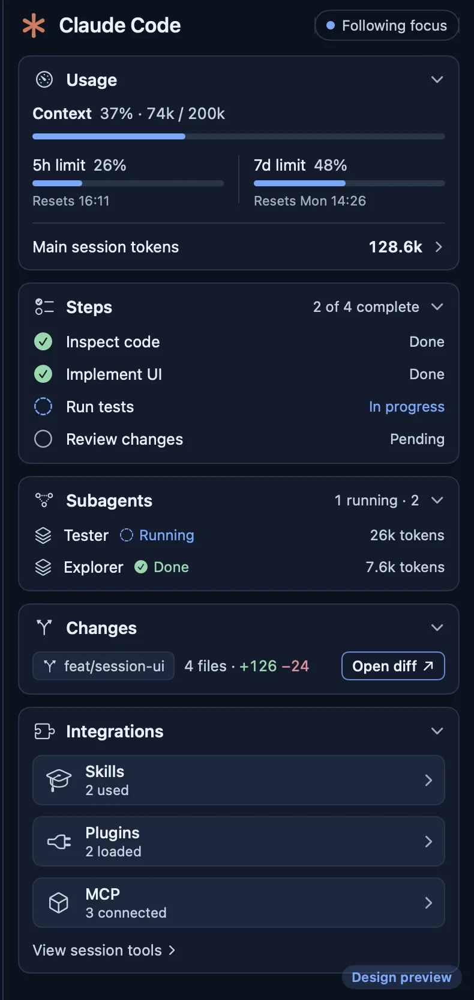
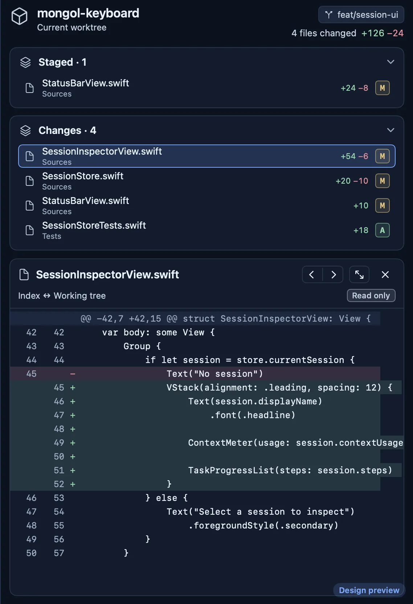
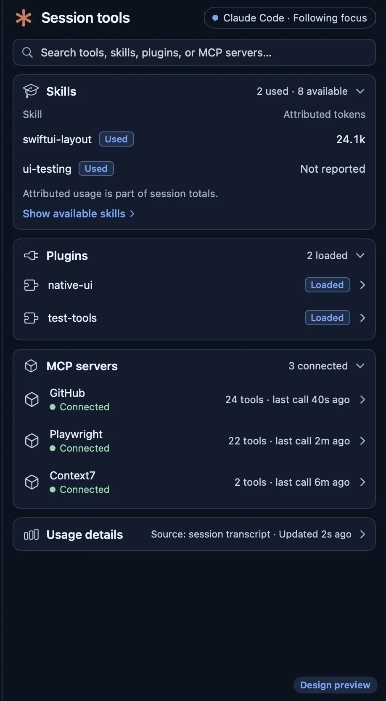

Workspaces of panes and tabs
Split right ⌘D or down ⇧⌘D. Drag a tab onto another pane: in the middle it joins the tabs, near an edge it splits that side. Drag the line between panes to resize.
Version 0.3.0 · native macOS · terminals by Ghostty
A native macOS terminal workspace for running several AI coding agents, shells and SSH sessions side by side. Not an IDE.
Termspace-0.3.0.dmg · 12.4 MB · Developer ID signed, notarized by Apple
SHA-256 1e0068ad107c2c0d18c74096fba443affa32b86ea62bcc9d870ffe6855ee862f
~/projects/demo % claude ✻ Claude Code > add a retry to the fetch helper and test it ⏺ Read src/fetch.ts ⏺ Update src/fetch.ts +14 −3 ⏺ Bash npm test ✓ 12 passed (1.8s) ⏺ fetchJson now retries twice with backoff on network errors. Tests pass. >
~/projects/demo % npm run dev > demo@1.0.0 dev ready on http://localhost:3000 GET /api/items 200 in 41ms GET /api/items 200 in 12ms



The terminal side is an illustration; the inspector pictures are from the app with sample data.
Features
Split right ⌘D or down ⇧⌘D. Drag a tab onto another pane: in the middle it joins the tabs, near an edge it splits that side. Drag the line between panes to resize.
Workspaces, panes, tab order and names return after a relaunch. Each shell restarts in its last folder. Nothing is ever run again.
Every terminal is drawn by Ghostty's Metal renderer through its embedding library, with Ghostty's themes to pick from.
A column beside the terminals that follows the focused tab. It finds the session through Claude Code's own session files and reads them read-only; it never writes under ~/.claude. The session panels need no setup; the plan's 5-hour and weekly windows and cost need the bundled plugin's status-line step.
A mark on the workspace, a count on the Dock icon, a toast, and a macOS notification when the window is out of sight. From bells and OSC 9 / 777; OSC 9;4 progress shows a spinner. Nothing is guessed from output.
The focused session in the order of Claude Code's own status line: model and effort, context, the 5-hour window and cost.
A tab that runs the system ssh. Keys, ports and jump hosts stay with ssh and your ~/.ssh/config; Termspace keeps only the host name.
⌘/ searches workspaces, terminals and every menu command. ⇧⌘O opens a Markdown or text file beside the terminals.
Every shortcut can be rebound. App themes Frost and Violet, each dark and light, plus any terminal theme Ghostty ships.
With it, a tab running Claude Code reports that it is working, needs you or has stopped, and the status line data (model, context use, cost) reaches Termspace for that tab. Shell → Install Claude Code Integration… copies it and shows the two steps to switch it on. Termspace never edits anything under ~/.claude itself.
Defaults. Change any of them in Settings → Shortcuts.
Install
To update, quit Termspace and replace the whole app with the new one.
Requirements
No account. No telemetry is sent anywhere. To show a session, Termspace reads Claude Code's session files on your Mac, read-only. Settings and layouts stay in your Library folder.